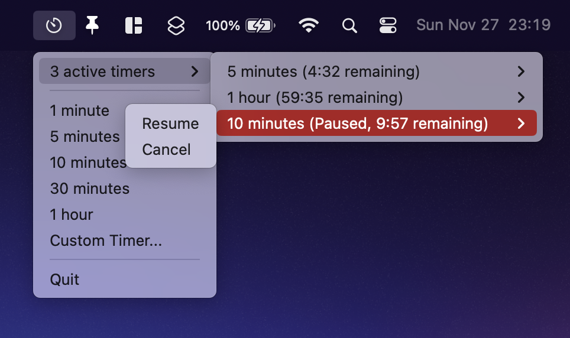
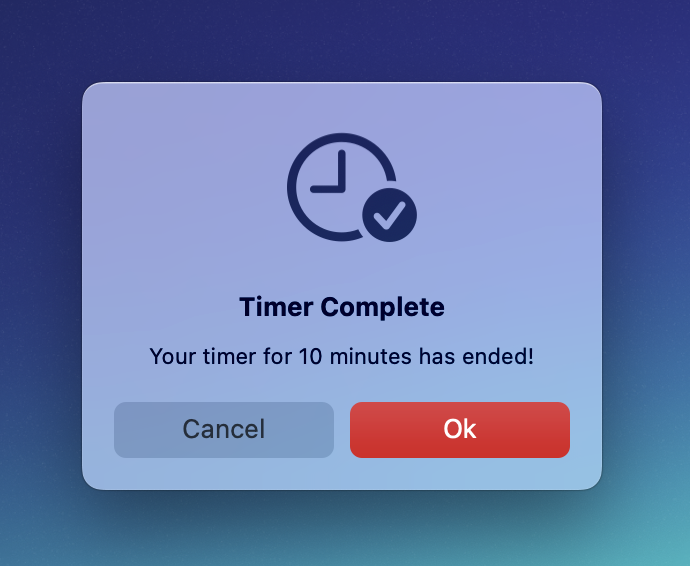

A macOS menubar app for running multiple timers simultaneously. Created in Python with PyXA.
GitHub Repository | Support DevelopmentDownload MultiTimer.zip from the releases page, unzip it, and move the application bundle to the Applications Folder. Since the app is unsigned, you will need to right-click the application bundle and select "Open" to run the app for the first time.
To run MultiTimer via Python, use Python 3.10 or higher and install the required packages via pip:$ pip install mac-pyxa py2app
Then simply run the Python script as you normally would:$ python MultiTimer.py
To build an application bundle for macOS, use py2app. A setup.py file is provided, but you may wish to customize it.
To install py2app:$ python setup.py py2app -A
To bundle the app:$ python setup.py py2app
The menubar dropdown:
When a timer completes:
If you have any questions about macimg that are not addressed in the documentation, or if you just want to talk, feel free to email stephen.kaplan@maine.edu.